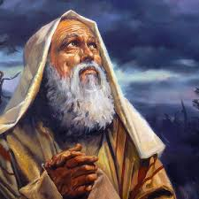
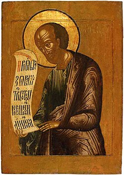
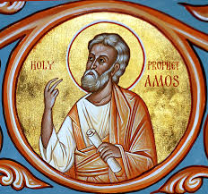
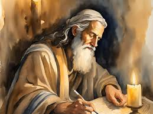
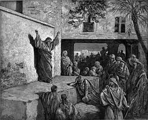
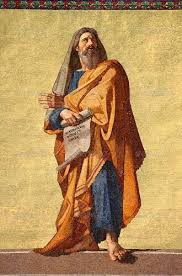
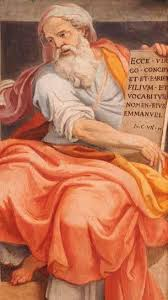

Evolución del concepto de Dios
Aunque Dios es inmutable, el concepto de Dios segun el hombre se va revelando de generacion a generacion gracias al dicernimiento espiritual de los hombres y las mujeres de esa generación.
1. Samuel

Samuel consolidó el tránsito de un dios tribal a un Creador eterno e inmutable, fundamentando el monoteísmo en pactos y promesas que abarcaron a todos los hebreos.
- «Los pilares de la tierra son del Señor, y él ha afirmado sobre ellos al mundo.»
- «La Fuerza de Israel no mentirá ni se arrepentirá, porque no es hombre para que se arrepienta.»
- «El Señor no desamparará a su pueblo.»
- «Ha hecho con nosotros un pacto eterno, ordenado en todas las cosas y seguro.»
- «Eres grande, oh Señor Dios, porque no hay como tú, ni hay Dios fuera de ti.»
- «El Señor enriquece y empobrece; abate y enaltece. Levanta del polvo al pobre y exalta a los mendigos para hacerles sentarse con príncipes y heredar el trono de la gloria.»
- «No hay nadie tan santo como el Señor. ¿Quién puede compararse con este santo Señor Dios?»
- «El Señor es un Dios de conocimiento, y las acciones son pesadas por él. El Señor juzgará los confines de la tierra, mostrando misericordia a los misericordiosos, y con el hombre recto también será recto.»
- «Caigamos ahora en manos del Señor, porque sus misericordias son grandes.»
- «No hay limitación para el Señor en salvar a muchos o a pocos.»
- «Tuyo es el reino, oh Señor, y tú eres exaltado como cabeza sobre todos.»
- «Tuyo, oh Señor, es la grandeza, el poder, la gloria, la victoria y la majestad. En tu mano está la fuerza y el poder, y tú eres capaz de engrandecer y dar fuerza a todos.»
2. Elías y Eliseo

En el reino dividido, Elías y su sucesor Eliseo restauraron el concepto samuelita de Yahvé como único Dios supremo frente a Baal, cimentando el monoteísmo mediante acciones ejemplares, sin registros textuales de sus palabras.
3. Amós y Oseas

Amós denunció la doble moral nacional al proclamar a un Dios que castigaría a todas las naciones por igual, mientras que Oseas resucitó la idea de un Dios de amor y perdón basado en la fidelidad y el arrepentimiento.
- «Busca al que formó las montañas y creó el viento, busca al que hizo las siete estrellas y a Orión, que convierte la sombra de la muerte en la mañana y hace oscurecer el día como la noche.»
- «Aunque excaven en el Seol, de allí los sacaré; aunque suban al cielo, de allí los haré descender.»
- «Y aunque vayan al cautiverio ante sus enemigos, de allí dirigiré la espada de la justicia, y los matará.»
- «Ciertamente no olvidaré ninguna de tus obras.»
- «Y tamizaré la casa de Israel entre todas las naciones como se tamiza el trigo en un cedazo.»
- «Te desposaré conmigo para siempre; sí, te desposaré conmigo en justicia, juicio, amor y misericordias. Te desposaré conmigo en fidelidad.»
- «Los amaré libremente, porque mi ira se ha apartado.»
- «Deseo castigarlos.»
- «Diré a los que no eran mi pueblo: ‘Vosotros sois mi pueblo’; y dirán: ‘Vosotros sois nuestro Dios.’»
- «Sanaré su infidelidad; los amaré libremente, porque mi ira se ha apartado.»
- «Tendré misericordia de mi pueblo. No conocerán a ningún otro Dios, porque no hay salvo yo.»
4. Primer Isaías

El primer Isaías elevó al Dios de Israel como eterno juez, salvador y consolador, con un lenguaje profundamente poético y visionario que afirmó la sabiduría y la misericordia divinas.
- «También pondré juicio por plomada y justicia por regla.»
- «El Señor te dará descanso de tu aflicción, de tu temor y de la dura servidumbre en que el hombre ha sido hecho servir.»
- «Y tus oídos oirán detrás de ti la palabra: ‘Este es el camino, andad por él.’»
- «He aquí que Dios es mi salvación; confiaré y no temeré, porque el Señor es mi fortaleza y mi canción.»
- «Venid ahora, y razonemos,’ dice el Señor, ‘aunque vuestros pecados sean como la grana, vendrán a ser blancos como la nieve; aunque sean rojos como el carmesí, vendrán a ser como blanca lana.’
- «Levántate y resplandece, porque ha venido tu luz, y la gloria del Señor ha amanecido sobre ti.»
- «El espíritu del Señor está sobre mí, porque me ha ungido para llevar buenas nuevas a los humildes…»
- «…En su amor y en su misericordia los redimió.»
5. Miqueas y Abdías

Miqueas y Abdías atacaron el ritualismo y la corrupción sacerdotal, defendiendo un Dios accesible y moralmente exigente.
- «Los gobernantes que juzgan por dádivas y los sacerdotes que enseñan por salario y los profetas que adivinan por dinero.»
- «Pero cada uno morará bajo su propia vid, y ninguno lo amedrentará; porque todos vivirán, cada uno conforme a su comprensión de Dios.»
- «¿Vendré yo delante de Dios con holocaustos? … ¿y qué pide el Señor de ti sino que hagas justicia, ames la misericordia y andes humildemente con tu Dios?»
6. Jeremías

Jeremías proclamó que Yahvé era Dios de todas las naciones, rompiendo el nacionalismo exclusivo y enfatizando el amor eterno y la justicia universal.
- «Sí, te he amado con amor eterno; por eso con misericordia te atraje.»
- «Porque no aflige de buena gana a los hijos de los hombres.»
- «Justo es nuestro Señor, grande en consejo y poderoso en obra. Sus ojos están sobre todos los caminos de los hijos de los hombres…»
- «Y ahora he entregado estas tierras en mano de Nabucodonosor, rey de Babilonia, mi siervo.»
7. Segundo Isaías

Durante el exilio babilónico, el Segundo Isaías proclamó un Dios cósmico y amoroso, con declaraciones sublimes que alcanzan la universalidad y la ternura paternal.
- «He aquí que toma las islas como cosa pequeña.»
- «Como los cielos son más altos que la tierra, así son mis caminos más altos que vuestros caminos y mis pensamientos más que vuestros pensamientos.»
- «He hecho la tierra y puesto al hombre sobre ella. La he creado no en vano; la formé para que fuese habitada.»
- «Yo soy el primero y el último; no hay Dios fuera de mí.»
- «Los cielos pasarán y la tierra envejecerá, pero mi justicia permanecerá para siempre…»
- «Así dice el Señor: ‘Te he creado, te he redimido, te he llamado por tu nombre; tú eres mío.’»
- «Cuando pases por las aguas, yo estaré contigo…»
- «¿Olvidará la mujer a su niño de pecho… Sin embargo, no olvidaré a mis hijos…»
- «Como pastor apacentará su rebaño; juntos llevará los corderos en su seno…»